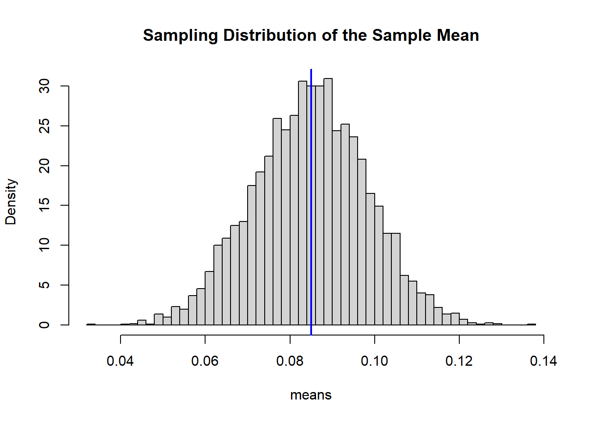
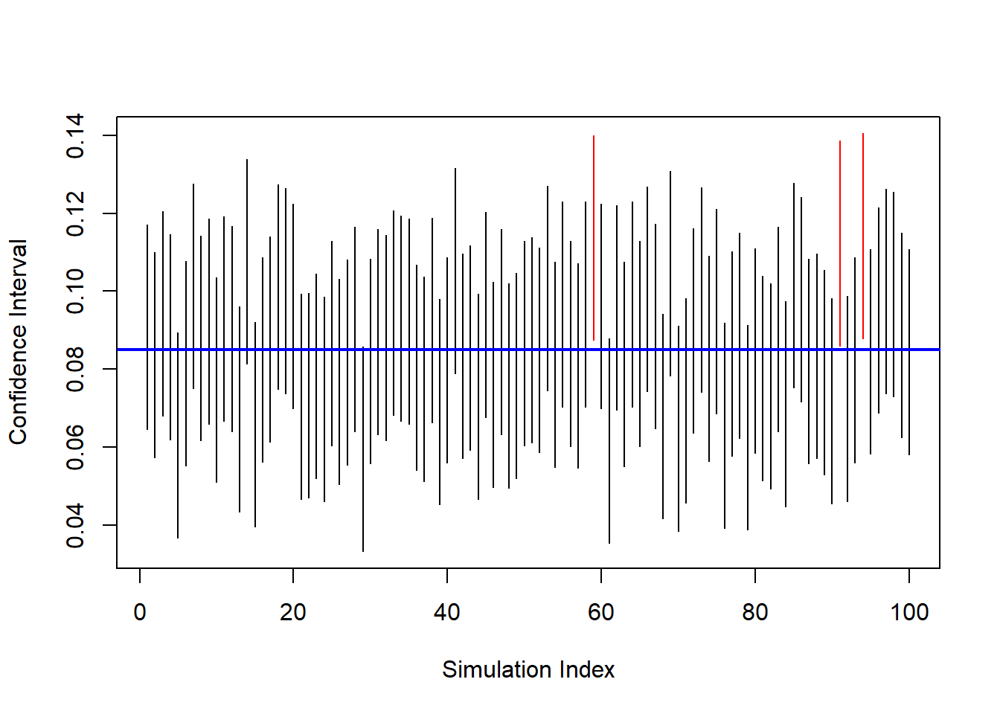
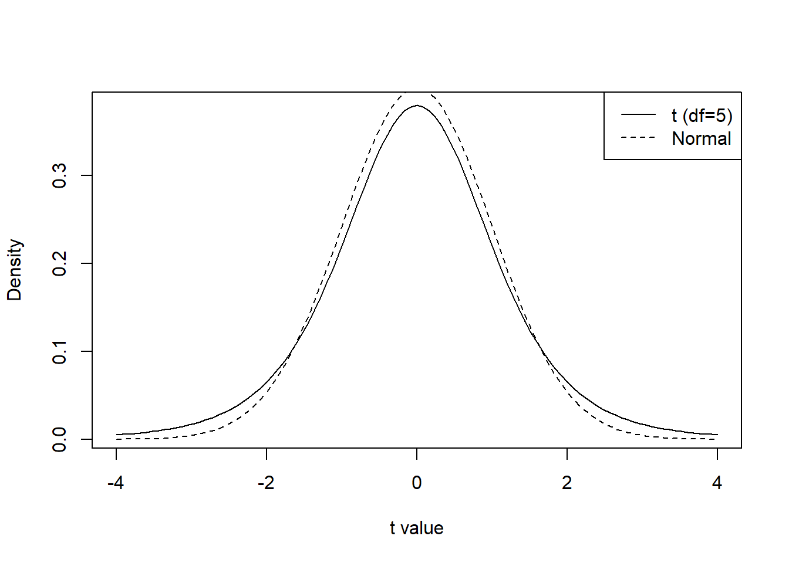
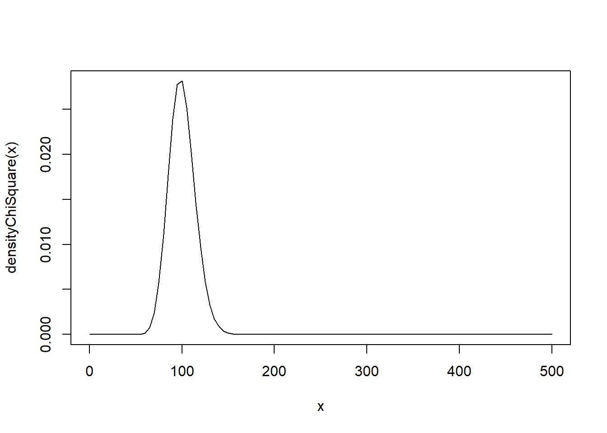
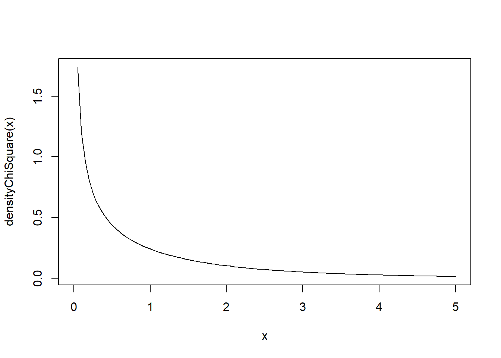
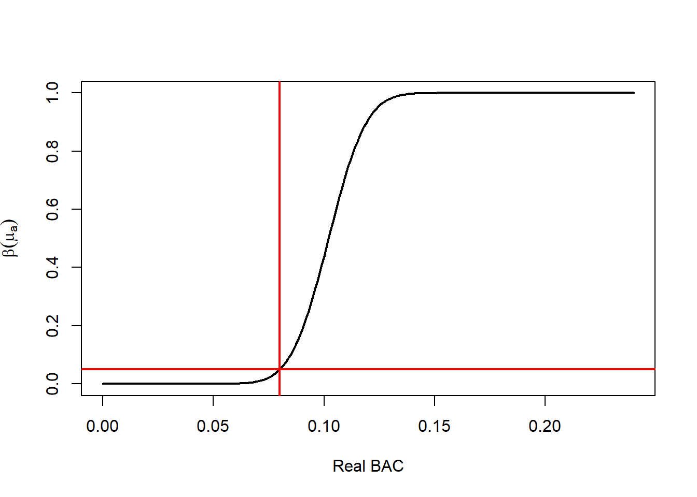
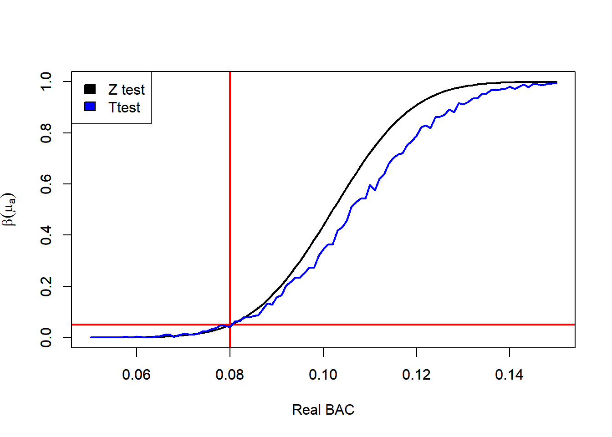

8 Inference About the Mean
8.1 Introduction
The simplest type of statistical inference concerns one parameter in one population. Before comparing multiple populations or modeling complex relationships, we begin with the most fundamental case:
Inference about the population mean.
This is the natural starting point because:
- The mean is often the parameter of primary interest.
- Its sampling distribution is well understood.
- The Central Limit Theorem provides broad applicability.
Methods for inference fall into two broad categories:
- Estimation
- Hypothesis testing
In estimation, we attempt to learn the value of the population mean.
In hypothesis testing, we evaluate a claim about the value of the population mean.
Throughout this chapter, we emphasize a computational perspective. Rather than relying only on formulas, we simulate sampling distributions to understand the logic of inference.
8.2 Example: Blood Alcohol Level
Suppose we want to determine the true blood alcohol concentration (BAC) of an individual.
The testing device reports measurements with random error. The manufacturer specifies that measurement errors are normally distributed with known standard deviation:
- Measurement error standard deviation: 0.03
- Errors are unbiased (mean zero)
If the true BAC is \(\mu\), each observed measurement can be modeled as:
\[ X_i = \mu + \varepsilon_i, \]
where the errors are independent and normally distributed.
We are interested only in the mean BAC level \(\mu\).
This example will guide our study of:
- Point estimation
- Confidence intervals
- Hypothesis testing
- Sample size determination
8.3 Assumptions
Statistical inference about the mean relies on several assumptions about the data generating process.
Suppose we observe measurements
\[ X_1, X_2, \ldots, X_n \]
from a population with mean \(\mu\) and variance \(\sigma^2\).
We assume:
- Independence
The observations are independent.
\[ X_1, X_2, \ldots, X_n \text{ are independent.} \]
- Constant Mean
Each observation has the same population mean
\[ \mathbb{E}(X_i) = \mu. \]
- Constant Variance
Each observation has the same variance
\[ \mathbb{V}(X_i) = \sigma^2. \]
- Normality or Large Sample Size
Either
- the population distribution is normal, or
- the sample size is sufficiently large so that the Central Limit Theorem applies.
Under these assumptions, the sample mean has sampling distribution
\[ \bar{X} \sim N\left(\mu,\frac{\sigma^2}{n}\right) \]
when the population is normal, and is approximately normal for large samples.
8.4 Point Estimation
The first step in statistical inference is computing a point estimate.
If we assume the measurements are normally distributed with mean \(\mu\), the natural estimator is the sample mean:
\[ \bar{X} = \frac{1}{n}\sum_{i=1}^n X_i. \]
Why the sample mean?
From probability theory:
- \(\mathbb{E}(\bar{X}) = \mu\)
- \(\mathbb{V}(\bar{X}) = \frac{\sigma^2}{n}\)
- If the population is normal, \(\bar{X}\) is exactly normally distributed.
We verify this through simulation.
set.seed(123)
mu <- 0.085
sd <- 0.03
n <- 5
B <- 5000
means <- replicate(B, mean(rnorm(n, mu, sd)))
mean(means)## [1] 0.08480454## [1] 0.01343491hist(means, breaks = 50, probability=TRUE, main="Sampling Distribution of the Sample Mean")
abline(v=mu, col="blue", lwd=2)
The histogram approximates a normal distribution centered at the true mean.
8.5 Interval Estimation
The sample mean is random. Reporting only \(\bar{X}\) does not indicate how close it is likely to be to \(\mu\).
To quantify uncertainty, we construct a confidence interval.
Because the population variance is known and the data are normal (or \(n\) is large), the sampling distribution of the sample mean is:
\[\bar{X} \sim N\left(\mu, \frac{\sigma^2}{n}\right)\]
This is the key starting point. The mean of \(\bar{X}\) is \(\mu\), and its standard deviation (the standard error) is \(\sigma/\sqrt{n}\).
8.5.1 Step 1: Standardize
To derive the interval, we standardize \(\bar{X}\):
\[ Z = \frac{\bar{X} - \mu}{\sigma/\sqrt{n}}. \]
Since \(\bar{X}\) is normal, this standardized variable follows:
\[ Z \sim N(0,1). \]
8.5.2 Step 2: Pick a Confidence Level 1 - \(\alpha\)
We choose a confidence level between \(0\) and \(1\),
\[ 1 - \alpha \]
Based on this level and for the standard normal distribution, we select an approapiate quantile
\[ z_{\alpha/2} \]
that satisfies:
\[ P(-z_{\alpha/2} \le Z \le z_{\alpha/2}) = 1 - \alpha \]
This statement says that the probability a standard normal variable falls between \(-z_{\alpha/2}\) and \(z_{\alpha/2}\) is \(1-\alpha\).
8.5.3 Step 3: Substitute Back for \(Z\)
Replace \(Z\) with its definition:
\[ P\left( z_{\alpha/2} \le \frac{\bar{X} - \mu}{\sigma/\sqrt{n}} \le z_{\alpha/2} \right) = 1 - \alpha. \]
8.5.4 Step 4: Solve for \(\mu\)
Multiply all parts by \(\sigma/\sqrt{n}\):
\[ P\left( z_{\alpha/2}\frac{\sigma}{\sqrt{n}} \le \bar{X} - \mu \le z_{\alpha/2}\frac{\sigma}{\sqrt{n}} \right) = 1 - \alpha. \]
Now rearrange to isolate \(\mu\):
\[ P\left( \bar{X} - z_{\alpha/2}\frac{\sigma}{\sqrt{n}} \le \mu \le \bar{X} + z_{\alpha/2}\frac{\sigma}{\sqrt{n}} \right) = 1 - \alpha. \]
8.5.5 Final Result
This leads directly to the \((1-\alpha)\) confidence interval:
\[ \bar{X} \pm z_{\alpha/2} \frac{\sigma}{\sqrt{n}} \]
8.5.6 Interpretation
The randomness is in \(\bar{X}\), not in \(\mu\).
Before observing the data, the interval is random. In repeated sampling, intervals constructed this way will contain the true mean \(\mu\) approximately \(100(1-\alpha)%\) of the time.
After the data are observed, the interval is fixed, and we interpret it using this long-run frequency property.
This derivation shows that confidence intervals are not ad hoc formulas. They arise directly from:
- The sampling distribution of \(\bar{X}\)
- Standardization
- A probability statement about the standard normal distribution
Everything follows from these three ingredients.
8.5.7 Example Interval Estimation
We return to the blood alcohol example and simulate repeated confidence intervals.
set.seed(123)
n <- 5
alpha <- 0.05
reaAlc <- 0.085
sd <- 0.03
rep <- 100
ci_bounds <- replicate(rep, {
obsErr <- rnorm(n, 0, sd)
x <- reaAlc + obsErr
x_bar <- mean(x)
lower <- x_bar - qnorm(1 - alpha/2) * sd / sqrt(n)
upper <- x_bar + qnorm(1 - alpha/2) * sd / sqrt(n)
c(lower, upper)
})
ci_bounds <- t(ci_bounds)
plot(ci_bounds[,1], type="n",
ylim=range(ci_bounds),
xlab="Simulation Index",
ylab="Confidence Interval")
for(i in 1:nrow(ci_bounds)){
segments(i, ci_bounds[i,1], i, ci_bounds[i,2],
col = ifelse(ci_bounds[i,1] <= reaAlc &
ci_bounds[i,2] >= reaAlc,
"black", "red"))
}
abline(h = reaAlc, col="blue", lwd=2)
Black intervals contain the true mean. Red intervals miss it.
This visualizes the long-run interpretation:
A 95% confidence procedure captures the true mean approximately 95% of the time.
Understood. Below is the revised section with all display equations written using $$ ... $$ for proper R Markdown rendering.
8.5.8 Choosing the Sample Size for Estimating the Population Mean
When constructing a confidence interval, we often face a practical design question:
How large must the sample be to achieve a desired level of precision?
Precision is measured by the margin of error, which is half the width of the confidence interval.
For a \((1-\alpha)\) confidence interval with known variance,
\[ E = z_{\alpha/2}\frac{\sigma}{\sqrt{n}}. \]
This formula shows that the margin of error depends on:
- The confidence level (through \(z_{\alpha/2}\)),
- The population standard deviation \(\sigma\),
- The sample size \(n\).
8.5.8.1 Solving for the Required Sample Size
Suppose we want the margin of error to be no larger than some specified value \(E\). We solve the equation algebraically for \(n\).
Starting from
\[ E = z_{\alpha/2}\frac{\sigma}{\sqrt{n}}, \]
multiply both sides by \(\sqrt{n}\):
\[ E\sqrt{n} = z_{\alpha/2}\sigma. \]
Now divide both sides by \(E\):
\[ \sqrt{n} = \frac{z_{\alpha/2}\sigma}{E}. \]
Finally, square both sides:
\[ n = \left(\frac{z_{\alpha/2}\sigma}{E}\right)^2. \]
This formula gives the minimum required sample size to guarantee the desired precision.
8.5.8.2 Interpretation of the Formula
The structure of the formula immediately reveals:
- If \(\sigma\) increases, \(n\) must increase.
- If we want smaller \(E\) (greater precision), \(n\) must increase.
- If we increase the confidence level (larger \(z_{\alpha/2}\)), \(n\) must increase.
Notice that \(n\) depends on the square of these quantities.
8.5.8.3 Interpreting “Width 0.02”
If the officer wants the confidence interval to have total width 0.02, then the margin of error must be:
\[ E = 0.01. \]
The resulting confidence interval would have the form:
\[ \bar{X} \pm 0.01. \]
Using:
- \(\sigma = 0.03\)
- \(\alpha = 0.05\)
- \(E = 0.01\)
we compute:
sigma <- 0.03
alpha <- 0.05
E <- 0.01
z <- qnorm(1 - alpha/2)
n_required <- (z * sigma / E)^2
ceiling(n_required)## [1] 35We always round up to ensure the margin of error does not exceed the target value.
8.5.8.4 The Square-Root Relationship
From the margin of error formula,
\[ E = z_{\alpha/2}\frac{\sigma}{\sqrt{n}}, \]
we see that
\[ E \propto \frac{1}{\sqrt{n}}. \]
This square-root relationship has an important implication:
- To cut the margin of error in half, we must quadruple the sample size.
Thus, gains in precision become increasingly expensive as we demand tighter intervals.
8.5.8.5 If the Sample Size Is Fixed
In many applications, \(n\) is constrained by budget or logistics. If \(n\) is fixed, we compute the resulting margin of error:
## [1] 0.02629568This tells us how precise our estimate can realistically be.
8.5.8.6 Design Trade-Off
Choosing \(n\) is fundamentally a planning decision that balances:
- Statistical precision,
- Confidence level,
- Practical cost.
Larger \(n\) leads to:
- Smaller margin of error,
- More reliable estimation,
- Greater financial and operational cost.
Understanding this trade-off is essential in statistical study design and will reappear later in hypothesis testing and power analysis.
8.6 Hypothesis Testing
In estimation, we attempt to learn \(\mu\).
In hypothesis testing, we evaluate a specific claim about \(\mu\).
Suppose the legal limit for blood alcohol concentration (BAC) is 0.08. We wish to determine whether the true mean BAC exceeds this limit.
We formalize the problem as:
- \(H_0: \mu = 0.08\)
- \(H_a: \mu > 0.08\)
The null hypothesis represents the legal benchmark. The alternative reflects the claim that the limit has been exceeded.
8.6.1 Logical Structure of a Test
Hypothesis testing follows a proof-by-contradiction structure:
- Assume \(H_0\) is true.
- Determine what values of the data would be unlikely under that assumption.
- If the observed data fall in that unlikely region, reject \(H_0\).
The key is understanding the sampling distribution under \(H_0\).
If \(H_0\) is true, then
\[ \bar{X} \sim N\left(\mu_0,\frac{\sigma^2}{n}\right). \]
Standardizing gives the test statistic:
\[ z = \frac{\bar{X} - \mu_0}{\sigma/\sqrt{n}}. \]
Under \(H_0\),
\[ Z \sim N(0,1). \]
This distribution determines the rejection region.
8.6.2 Developing the Rejection Region
For a right-tailed test at significance level \(\alpha\), we want:
\[ P(\text{Reject } H_0 \mid H_0 \text{ true}) = \alpha. \]
Since \(Z \sim N(0,1)\) under \(H_0\), we choose a cutoff \(z_\alpha\) such that
\[ P(Z \ge z_\alpha) = \alpha. \]
This defines the critical value.
Therefore, the rejection region in terms of \(Z\) is:
\[ \text{Reject } H_0 \quad \text{if} \quad Z \ge z_\alpha. \]
Substituting back for \(Z\):
\[ \frac{\bar{X} - \mu_0}{\sigma/\sqrt{n}} \ge z_\alpha. \]
Solving for \(\bar{X}\) gives the rejection region in the original measurement scale:
\[ \bar{X} \ge \mu_0 + z_\alpha \frac{\sigma}{\sqrt{n}}. \]
This is an important step: the rejection region can be expressed either in standardized units (z-scores) or directly in terms of the sample mean.
8.6.3 Interpretation of the Rejection Region
The rejection region consists of sample means that are sufficiently large that they would be rare if \(\mu = 0.08\) were true.
Thus:
- If \(\bar{X}\) falls in this region, we conclude the data are inconsistent with \(H_0\).
- If \(\bar{X}\) does not fall in this region, we do not have enough evidence to reject \(H_0\).
Note carefully:
Failing to reject \(H_0\) does not mean \(H_0\) is true. It means the data are not sufficiently inconsistent with it.
8.6.4 Components of a Test
A complete hypothesis test requires:
Null hypothesis (\(H_0\)) The benchmark claim being evaluated.
Alternative hypothesis (\(H_a\)) The competing claim.
Significance level (\(\alpha\)) The probability of a Type I error.
Test statistic A standardized measure of discrepancy between data and \(H_0\).
Sampling distribution under \(H_0\) Determines probabilities and critical values.
Rejection region Values of the test statistic that lead to rejection.
Decision rule and conclusion A formal statement in context.
8.6.5 Type I and Type II Errors
Two types of errors are possible.
8.6.5.1 Type I Error
Rejecting \(H_0\) when it is true.
\[ P(\text{Type I Error}) = \alpha. \]
In this context: concluding BAC exceeds 0.08 when in fact it does not.
8.6.6 One-Tailed Blood Alcohol Test (Numerical Illustration)
We simulate data where the true mean is slightly above the legal limit.
set.seed(123)
mu0 <- 0.08
mu <- 0.09
sd <- 0.03
n <- 5
x <- rnorm(n, mu, sd)
xbar <- mean(x)
# Test Statistic
z <- (xbar - mu0) / (sd / sqrt(n))
z## [1] 1.178192# Rejection Region
R <- qnorm(p = 1 - alpha)
# Result of the Test
if(z > R){
print("Reject the Null Hypothesis")
} else {
print("Fail to reject the Null Hypothesis")
}## [1] "Fail to reject the Null Hypothesis"If \(z \ge z_\alpha\), we reject \(H_0\).
Otherwise, we fail to reject \(H_0\).
8.6.8 Significance Level and p-Value
Instead of precomputing a rejection region, we may compute a p-value.
The p-value is:
The probability, assuming \(H_0\) is true, of observing a test statistic at least as extreme as the one obtained.
For a right-tailed test:
\[ \text{p-value} = P(Z \ge z_{\text{obs}} \mid H_0 \text{ true}). \]
8.6.9 Conceptual Summary
Hypothesis testing proceeds by:
- Modeling the sampling distribution under \(H_0\).
- Determining what outcomes are rare under that model.
- Comparing observed data to that rarity threshold.
The rejection region formalizes what “rare” means. The p-value quantifies how rare the observed result actually is.
Both methods operationalize the same probabilistic logic.
8.7 Inference About the Mean Unknown Variance
In the previous sections, we constructed confidence intervals and hypothesis tests assuming that the population variance $ ^2 $ was known. In practice, this assumption is rarely realistic. Most of the time the population variance is unknown and must be estimated from the sample.
When the population variance is unknown, we replace $ $ with the sample standard deviation $ s $. However, this replacement introduces additional uncertainty. Because of this, the sampling distribution of the standardized mean is no longer normal. Instead, it follows the Student (t) distribution.
The Student $ t $ distribution allows us to correctly account for the additional variability introduced by estimating $ $.
8.7.1 Review Properties of the Student t Distribution
The Student \(t\) distribution is a continuous probability distribution that arises frequently in statistical inference. It forms a family of distributions indexed by a parameter called the degrees of freedom, denoted by \(\nu\).
8.7.1.1 Definition
A random variable \(T\) is said to follow a Student \(t\) distribution with \(\nu\) degrees of freedom, written
\[ T \sim t_\nu , \]
if it can be expressed as the ratio
\[ T = \frac{Z}{\sqrt{U/\nu}}, \]
where
- \(Z \sim N(0,1)\),
- \(U \sim \chi^2_\nu\),
- \(Z\) and \(U\) are independent.
This representation shows that the \(t\) distribution is closely related to both the normal and chi–square distributions.
8.7.1.2 Shape and Behavior
The Student \(t\) distribution has several key characteristics:
- It is symmetric around 0.
- It has heavier tails than the standard normal distribution.
- Its exact shape depends on the degrees of freedom \(\nu\).
For small values of \(\nu\), the distribution has very heavy tails, meaning that extreme values occur with higher probability. As \(\nu\) increases, the distribution becomes more concentrated around zero.
curve(dt(x, df = 5), from = -4, to = 4,
ylab = "Density",
xlab = "t value")
curve(dnorm(x), from = -4, to = 4, add = TRUE, lty = 2)
legend("topright",
legend = c("t (df=5)", "Normal"),
lty = c(1,2))
8.7.1.3 Relationship with the Normal Distribution
As the degrees of freedom increase, the Student \(t\) distribution approaches the standard normal distribution. In particular,
\[ t_\nu \rightarrow N(0,1) \quad \text{as } \nu \to \infty . \]
Thus, for large values of \(\nu\), the \(t\) distribution and the standard normal distribution are nearly indistinguishable.
8.7.1.4 Mean and Variance
The mean and variance of the \(t\) distribution depend on \(\nu\):
- If \(\nu > 1\), the mean is
\[ \mathbb{E}(T) = 0 . \]
- If \(\nu > 2\), the variance is
\[ \mathbb{V}(T) = \frac{\nu}{\nu - 2}. \]
For \(\nu \le 2\), the variance is infinite, reflecting the heavy tails of the distribution.
8.7.1.5 Critical Values
For many statistical procedures, we use quantiles (critical values) of the \(t\) distribution.
For a probability level \(\alpha\), the value \(t_{\alpha,\nu}\) satisfies
\[ P(T > t_{\alpha,\nu}) = \alpha, \quad T \sim t_\nu . \]
Because the distribution is symmetric,
\[ P(T < -t_{\alpha,\nu}) = \alpha. \]
These critical values are commonly tabulated and are used to construct confidence intervals and perform hypothesis tests.
8.7.2 Confidence Intervals Unknown Variance
When the population variance is unknown, the confidence interval for the population mean is constructed using the Student (t) distribution.
Definition 8.1 (Confidence Interval for the Mean (Unknown Variance)) Let \(y_1, y_2, \dots, y_n\) be a random sample from a normal population with unknown variance.
A \((1-\alpha)\) confidence interval for the population mean \(\mu\) is
\[ \bar{y} \pm t_{\alpha/2,\,n-1}\frac{s}{\sqrt{n}} \]
where
- \(\bar{y}\) is the sample mean
- \(s\) is the sample standard deviation
- \(t_{\alpha/2,n-1}\) is the critical value from the Student \(t\) distribution with \(n-1\) degrees of freedom
Compared to the normal confidence interval, the only difference is that we use the (t) critical value instead of the (z) critical value.
Because the (t) distribution has heavier tails, the resulting confidence interval is typically wider, reflecting the additional uncertainty.
8.7.2.1 Example BAC continued unknown variance
Suppose we collected a small sample of \(n=10\) BAC measurements from a driver suspected of driving under the influence. The legal limit is \(0.08\). Since the population variance is unknown and the sample size is small, we use the Student \(t\) distribution.
We compute a 95% confidence interval for the population mean BAC.
First, suppose the observed BAC values are:
# Set Seed
set.seed(2026)
# Simulation settings
n <- 5
alpha <- 0.05
reaBac <- 0.085
sd <- 0.03
# Draws Samples
bac <- rnorm(n = n, mean = reaBac, sd = sd)We begin by computing the sample size, sample mean, and sample standard deviation.
## [1] 5## [1] 0.07797249## [1] 0.01917043Next, we compute the standard error of the mean.
## [1] 0.008573276For a 95% confidence interval we need the critical value from the \(t\) distribution with \(n-1\) degrees of freedom.
## [1] 2.776445The confidence interval is
\[ \bar{y} \pm t_{\alpha/2,,n-1}\frac{s}{\sqrt{n}} \]
We compute the interval endpoints.
## [1] 0.05416926## [1] 0.1017757Thus, the 95% confidence interval for the mean BAC is (0.0542, 0.1018).
This interval provides a range of plausible values for the population mean BAC.
Finally, we can verify the result using the built-in R function t.test().
##
## One Sample t-test
##
## data: bac
## t = 9.0948, df = 4, p-value = 0.0008105
## alternative hypothesis: true mean is not equal to 0
## 95 percent confidence interval:
## 0.05416926 0.10177572
## sample estimates:
## mean of x
## 0.07797249The output confirms the same confidence interval calculated manually.
8.7.3 Hypothesis Testing Unknown Variance
Hypothesis testing for the mean with unknown variance also uses the Student (t) distribution.
Definition 8.2 (t Test for the Mean) Let \(y_1, y_2, \dots, y_n\) be a random sample from a normal population with unknown variance.
To test
- \(H_0: \mu = \mu_0\)
we use the test statistic
\[ t = \frac{\bar{y}-\mu_0}{s/\sqrt{n}} \]
Under \(H_0\), this statistic follows a Student \(t\) distribution with \(n-1\) degrees of freedom.
The steps for the hypothesis test are:
- State the hypotheses
- Compute the test statistic
- Determine the rejection region or compute the p-value
- Make a decision
- Interpret the result in context
8.7.3.1 Example BAC continued Hypothesis testing unknown variance
We now test whether the mean BAC of drivers exceeds the legal limit of 0.08. Since the population variance is unknown and the sample size is small, we use a one-sample \(t\) test.
We test
- \(H_0: \mu = 0.08\)
- \(H_a: \mu > 0.08\)
Suppose the BAC measurements are:
# Set Seed
set.seed(2026)
# Simulation settings
n <- 5
alpha <- 0.05
reaBac <- 0.085
sd <- 0.03
# Draws Samples
bac <- rnorm(n = n, mean = reaBac, sd = sd)First, compute the sample size, sample mean, and sample standard deviation.
## [1] 5## [1] 0.07797249## [1] 0.01917043Next, compute the test statistic
\[ T = \frac{\bar{y}-\mu_0}{s/\sqrt{n}} \]
where \(\mu_0 = 0.08\).
## [1] -0.2364921The test statistic follows a \(t\) distribution with \(n-1\) degrees of freedom under the null hypothesis.
= n-1
## [1] 4Next, compute the p-value for the right-tailed test.
## [1] 0.5876661If the p-value is smaller than the significance level \(\alpha = 0.05\), we reject \(H_0\).
## [1] FALSEThus, if this value is TRUE, we reject the null hypothesis and conclude that the mean BAC is greater than the legal limit.
Finally, we can verify the result using the built-in t.test() function in R.
##
## One Sample t-test
##
## data: bac
## t = -0.23649, df = 4, p-value = 0.5877
## alternative hypothesis: true mean is greater than 0.08
## 95 percent confidence interval:
## 0.05969558 Inf
## sample estimates:
## mean of x
## 0.07797249This function performs the same hypothesis test and returns the test statistic, degrees of freedom, p-value, and confidence interval.
8.8 Not Normally Distributed Population
In the previous sections, our inference procedures relied on an important assumption:
The population from which the sample is drawn is normally distributed.
When this assumption holds, the theoretical distributions used in inference are exact. In particular:
- The sample mean has an exact normal distribution.
- When the variance is unknown, the statistic
\[ t = \frac{\bar{y}-\mu}{s/\sqrt{n}} \]
follows a Student \(t\) distribution.
However, in practice many populations are not normally distributed. Real-world data may be skewed, heavy-tailed, or contain outliers.
When the population distribution is not normal, the reliability of the inference procedures we developed depends strongly on the sample size and on whether the population variance is known or unknown.
We analyze three scenarios:
- Large sample size
- Intermediate sample size
- Small sample size
8.8.1 Big Sample Size
When the sample size is large, the procedures previously described for inference about the mean are generally reliable even when the population distribution is not normal.
A common rule of thumb is
\[ n \ge 30 \]
although the required sample size may depend on how strongly the population deviates from normality.
The key reason these methods remain valid is the Central Limit Theorem, which describes the behavior of the sample mean for large samples.
8.8.1.1 Distribution of the Sample Mean
Even when the population is not normally distributed, the Central Limit Theorem states that the sampling distribution of the sample mean approaches a normal distribution as the sample size becomes large.
Definition 8.3 (Central Limit Theorem) Let \(y_1, y_2, \dots, y_n\) be a random sample from a population with mean \(\mu\) and variance \(\sigma^2\).
As the sample size \(n\) becomes large, the sampling distribution of the sample mean \(\bar{y}\) approaches a normal distribution with
\[ \mathbb{E}[\bar{y}] = \mu \]
and
\[ \mathbb{V}[\bar{y}] = \frac{\sigma^2}{n}. \]
({y}) =
Because of this result, the sampling distribution of the sample mean is approximately normal for large \(n\), even if the population distribution itself is not normal.
Variance known
If the population variance \(\sigma^2\) is known, the standardized statistic
\[ \frac{\bar{y}-\mu}{\sigma/\sqrt{n}} \]
is approximately standard normal for large \(n\). Therefore, the normal-based confidence intervals and hypothesis tests introduced earlier are typically reliable.
Variance unknown
If the population variance is unknown, we replace \(\sigma\) with the sample standard deviation \(s\). For large samples, \(s\) provides a good estimate of \(\sigma\), and the statistic
\[ \frac{\bar{y}-\mu}{s/\sqrt{n}} \]
is approximately normal as well.
As a result, the Student \(t\) procedures for the mean also work well for large samples, even when the population distribution is not normal.
8.8.1.2 Distribution of the Sample Variance
The behavior of the sample variance depends more strongly on the population distribution.
If the population is normal, the sample variance has a distribution related to the chi-square distribution. If the population is not normal, this exact result no longer holds.
However, for large samples:
- The sample variance remains a consistent estimator of \(\sigma^2\).
- The standard error \(s/\sqrt{n}\) provides a good approximation to the variability of the sample mean.
Therefore:
- When the variance is known, inference about the mean remains reliable.
- When the variance is unknown, the \(t\)-based procedures also remain reliable for large \(n\).
8.8.1.3 Example Big Sample Size
# set.seed(123)
# Simulation settings
rep <- 1000
n <- 30
alpha <- 0.05
reaAlc <- 0.085
sd <- 0.03
df <- 1
varKno <- FALSE
densityChiSquare <- function(x) {dchisq(x = x, df = df)}
curve(densityChiSquare, from = 0, to = 5 * df)
ci_bounds <- replicate(rep, {
# Creates the Observations
obsErr <- (rchisq(n, df = df) - df) / sqrt(2 * df) * sd
x <- reaAlc + obsErr
# Computes the Sample Mean
x_bar <- mean(x)
# Computes the Sample Standard Error if Necesary
if(varKno){
s <- sd
} else {
s <- sd(x)
}
# Computes the Confidence Intervals
lower <- x_bar - qt(1 - alpha/2, df = n-1) * s / sqrt(n)
upper <- x_bar + qt(1 - alpha/2, df = n-1) * s / sqrt(n)
# Saves
c(lower, upper)
})
ci_bounds <- t(ci_bounds)
conInt <- ci_bounds[, 1] <= reaAlc & ci_bounds[, 2] >= reaAlc
print(paste0("Percentage of Confidence Intervals that contain the True Parameter: ", mean(conInt)))## [1] "Percentage of Confidence Intervals that contain the True Parameter: 0.91"8.8.2 Intermediate Sample Size
When the sample size is moderate, the reliability of inference procedures depends more strongly on the shape of the population distribution.
A rough range for intermediate sample sizes is
\[ 10 \le n < 30. \]
In this range, the Central Limit Theorem begins to take effect, but the sampling distributions may still be influenced by the shape of the population.
8.8.2.1 Distribution of the Sample Mean
For intermediate sample sizes, the sampling distribution of \(\bar{y}\) may still show noticeable deviations from normality if the population distribution is highly skewed or heavy-tailed.
Variance known
If the variance is known, the statistic
\[ \frac{\bar{y}-\mu}{\sigma/\sqrt{n}} \]
is no longer guaranteed to follow a normal distribution unless the population itself is normal.
However:
- If the population distribution is approximately symmetric, the normal approximation is often acceptable.
- If the population is strongly skewed, the approximation may be poor.
Variance unknown
When the variance is unknown, an additional source of variability appears because \(s\) is estimated from the sample.
In this situation:
- The statistic used in the \(t\) procedures may not follow the theoretical \(t\) distribution.
- The inference procedures may still work reasonably well when the population is close to symmetric.
- If the population is highly skewed, the procedures may become unreliable.
8.8.2.2 Distribution of the Sample Variance
For intermediate sample sizes, the sample variance can be sensitive to extreme observations.
This is particularly important when:
- the population distribution has heavy tails, or
- the sample contains outliers.
Consequently:
- When the variance is known, inference about the mean depends mainly on the behavior of the sample mean.
- When the variance is unknown, the additional uncertainty from estimating \(s\) can further reduce the reliability of the inference procedures.
8.8.3 Small Sample Size
When the sample size is small, deviations from normality can have a large effect on inference.
A common rule of thumb is
\[ n < 10. \]
In this situation, the theoretical results that justify the inference procedures developed earlier rely strongly on the assumption that the population distribution is normal.
8.8.3.1 Distribution of the Sample Mean
If the population is not normally distributed and the sample size is small, the sampling distribution of the sample mean may be:
- skewed,
- heavy-tailed,
- very different from a normal distribution.
Variance known
Even if the population variance \(\sigma^2\) is known, the statistic
\[ \frac{\bar{y}-\mu}{\sigma/\sqrt{n}} \]
does not necessarily follow a normal distribution when the population is not normal.
Therefore, the normal-based inference procedures may not be valid.
Variance unknown
When the variance is unknown, the situation becomes even more difficult.
The \(t\) procedures rely on the assumption that the population distribution is normal when the sample size is small. If this assumption does not hold, the statistic
\[ \frac{\bar{y}-\mu}{s/\sqrt{n}} \]
may not follow the Student \(t\) distribution.
As a result, the confidence intervals and hypothesis tests based on the \(t\) distribution may perform poorly.
8.8.3.2 Distribution of the Sample Variance
The sample variance is particularly unstable when the sample size is small.
In small samples:
- a single extreme observation can greatly affect \(s^2\),
- the estimate of the standard error \(s/\sqrt{n}\) may be unreliable.
These issues further reduce the reliability of the inference procedures when the variance is unknown.
When both conditions occur:
- the sample size is small, and
- the population distribution is not approximately normal,
standard inference procedures for the mean may not be reliable.
In such situations, alternative approaches can be used that rely less heavily on distributional assumptions. One important approach is resampling methods, which we introduce in the next section.
8.8.4 What to Check Before Applying Inference Methods
When the population distribution is not known to be normal, the reliability of inference about the mean depends mainly on three elements:
- the sample size
- the shape of the data distribution
- whether the population variance is known or unknown
Before applying the inference procedures introduced earlier, it is useful to evaluate the situation using the following guidelines.
8.8.4.1 Large Sample Size (\(n \ge 30\))
When the sample size is large, inference procedures for the mean are generally reliable even if the population is not normally distributed.
This occurs because the Central Limit Theorem ensures that the sampling distribution of the sample mean is approximately normal.
What to check:
- Verify that the sample size is large (\(n \ge 30\)).
- Look at a histogram or boxplot to confirm that there are no extreme outliers.
- Confirm that the sample was obtained using an appropriate random sampling method.
If these conditions are satisfied:
- If the variance \(\sigma^2\) is known, the normal-based procedures for inference about \(\mu\) can be used.
- If the variance \(\sigma^2\) is unknown, the Student \(t\) procedures introduced earlier can be used.
8.8.4.2 Intermediate Sample Size (\(10 \le n < 30\))
When the sample size is moderate, the validity of the inference procedures depends more strongly on the shape of the data.
What to check:
- Examine the shape of the sample distribution using graphical summaries such as histograms or boxplots.
- Determine whether the data appear approximately symmetric.
- Check for strong skewness or extreme outliers.
If the data appear approximately symmetric:
- The previously described inference procedures are often still reasonable.
If the data show strong skewness or outliers:
- The normal or \(t\) approximations may be unreliable.
The effect of non-normality is particularly important when the variance is unknown, since the standard error must be estimated using the sample variance.
8.8.4.3 Small Sample Size (\(n < 10\))
When the sample size is small, inference procedures depend heavily on the assumption that the population distribution is normal.
What to check:
- Consider whether there is strong prior knowledge that the population distribution is approximately normal.
- Examine the sample data for skewness or outliers, keeping in mind that small samples provide limited information about the true distribution.
If the population is approximately normal:
- The inference procedures previously described remain valid.
If the population distribution is not approximately normal:
- The theoretical distributions used in those procedures may not provide reliable results.
In these situations, alternative methods that rely less on distributional assumptions can be used. One such approach is bootstrap methods, which will be discussed in the next section.
8.8.5 Summary Table of When Inference Procedures Are Reliable
The following table summarizes when the inference procedures for the population mean can generally be applied when the population distribution is not known to be normal.
| Sample Size | Population Shape | Variance Known | Variance Unknown | Reliability of Inference |
|---|---|---|---|---|
| \(n \ge 30\) | Any reasonable distribution | Normal procedures generally reliable | \(t\) procedures generally reliable | Usually reliable due to the Central Limit Theorem |
| \(10 \le n < 30\) | Approximately symmetric | Normal approximation often acceptable | \(t\) procedures often acceptable | Depends on skewness and outliers |
| \(10 \le n < 30\) | Strongly skewed or heavy-tailed | Normal approximation may be unreliable | \(t\) procedures may be unreliable | Use caution |
| \(n < 10\) | Approximately normal | Normal procedures valid | \(t\) procedures valid | Reliable if normality assumption holds |
| \(n < 10\) | Not approximately normal | Normal procedures unreliable | \(t\) procedures unreliable | Alternative methods recommended |
This table provides a practical guideline for deciding whether the inference procedures previously introduced can be applied.
When the conditions for these procedures are not satisfied, alternative approaches that rely less on distributional assumptions may be needed. One such approach is bootstrap methods, which are introduced in the next section.
8.9 Inferences with Small n (Bootstrap Methods)
When the sample size is small, the assumptions required for the (t) methods may not hold. In particular, the methods rely on the population being approximately normally distributed.
If the normality assumption is questionable, we can use bootstrap methods.
Bootstrap methods use resampling to approximate the sampling distribution of a statistic.
Instead of relying on theoretical distributions, we repeatedly sample from the observed data and compute the statistic of interest.
8.9.1 When to Apply
Bootstrap methods are useful when:
- The sample size is small
- The population distribution is unknown
- The normality assumption may not hold
They are particularly useful when theoretical sampling distributions are difficult to derive.
However, bootstrap methods still require that the sample be representative of the population.
8.9.2 Steps for Bootstrap Methods about the Mean Confidence Intervals
The bootstrap approach approximates the sampling distribution of the sample mean by repeatedly sampling from the observed data.
Steps:
Start with the observed sample $ y_1, y_2, , y_n $
Draw a bootstrap sample of size \(n\) from the data with replacement
Compute the sample mean for the bootstrap sample
Repeat steps 2–3 many times (for example, 10,000 times)
The collection of bootstrap means approximates the sampling distribution
Construct a confidence interval using the percentiles of the bootstrap distribution
For a 95% confidence interval we use the 2.5% and 97.5% percentiles.
# set.seed(123)
# Simulation settings
rep <- 100
n <- 10
alpha <- 0.05
reaAlc <- 0.085
df <- 100
B <- 1000
densityChiSquare <- function(x) {dchisq(x = x, df = df)}
curve(densityChiSquare, from = 0, to = 5 * df)
ci_bounds <- replicate(rep, {
# Creates the Observations
obsErr <- (rchisq(n, df = df) - df) / sqrt(2 * df) * sd
x <- reaAlc + obsErr
# Computes the Sample Mean
x_bar <- mean(x)
# Resamples
booSam <- replicate(n = B, expr = sample(x = x, size = n, replace = TRUE))
# Computes Means
booMea <- colMeans(booSam)
# Computes the Quantiles
lower <- quantile(x = booMea, probs = 0.025)
upper <- quantile(x = booMea, probs = 0.975)
# Saves
c(lower, upper)
})
ci_bounds <- t(ci_bounds)
conInt <- ci_bounds[, 1] <= reaAlc & ci_bounds[, 2] >= reaAlc
print(paste0("Number of Samples: ", n))## [1] "Number of Samples: 10"## [1] "Percentage of Confidence Intervals that contain the True Parameter: 0.83"8.9.3 Steps for Bootstrap Methods about the Mean Hypothesis Testing
Bootstrap methods can also be used for hypothesis testing.
The key idea is to simulate the sampling distribution under the null hypothesis.
Steps:
Assume the null hypothesis is true
Center the data so that the sample mean equals the null value
Draw bootstrap samples from the centered data
Compute the bootstrap test statistic for each sample
Compare the observed statistic to the bootstrap distribution
Compute the p-value as the proportion of simulated statistics that are more extreme than the observed statistic
# set.seed(123)
# Simulation settings
rep <- 100
n <- 10
alpha <- 0.05
reaAlc <- 0.085
sd <- 0.01
mu0 <- reaAlc
df <- 100
B <- 1000
densityChiSquare <- function(x) {dchisq(x = x, df = df)}
curve(densityChiSquare, from = 0, to = 5 * df)
booPva <- replicate(rep, {
# Creates the Observations
obsErr <- (rchisq(n, df = df) - df) / sqrt(2 * df) * sd
x <- reaAlc + obsErr
# Computes the Sample Mean
x_bar <- mean(x)
# Centers
x <- x - x_bar + mu0
# Resamples
booSam <- replicate(n = B, expr = sample(x = x, size = n, replace = TRUE))
# Computes Means
booMea <- colMeans(booSam)
# Computes the p-value
mean(x_bar > booMea)
})
# Percentage of Times that the null hypothesys is rejected
rejPer <- mean(booPva < alpha)
print(paste0("Error rate: ", rejPer))## [1] "Error rate: 0.11"Bootstrap hypothesis tests are especially useful when the theoretical distribution of the test statistic is unknown or unreliable.
8.9.4 Bootstrap-\(t\) or Studentized Bootstrap
When the population distribution is not normal and the sample size is not sufficiently large for the Central Limit Theorem to provide a reliable approximation, the classical normal and \(t\) inference procedures may perform poorly.
A refinement of the basic bootstrap confidence interval is the Bootstrap-\(t\) (Studentized Bootstrap) method. This approach attempts to mimic the sampling distribution of the \(t\)-statistic rather than the sampling distribution of the sample mean itself.
The classical \(t\) statistic used in inference about the mean is
\[ t = \frac{\bar{y} - \mu}{s/\sqrt{n}} \]
which standardizes the sample mean by its estimated standard error.
\[ t = \frac{\bar{y}-\mu}{s/\sqrt{n}} \]
The Bootstrap-\(t\) method applies this same idea within the bootstrap framework.
Instead of directly approximating the distribution of \(\bar{y}\), we approximate the distribution of the statistic
\[ t^* = \frac{\bar{y}^* - \bar{y}}{s^*/\sqrt{n}} \]
where
- \(\bar{y}^*\) is the mean of a bootstrap sample
- \(s^*\) is the standard deviation of the bootstrap sample
This procedure studentizes the bootstrap estimate by accounting for variability in the standard error.
The following code exemplifies the studentized bootstrap confidence intervals and hypothesis testing.
# set.seed(123)
# Simulation settings
rep <- 100
n <- 5
alpha <- 0.05
reaAlc <- 0.085
sd <- 0.01
df <- 1
B <- 1000
densityChiSquare <- function(x) {dchisq(x = x, df = df)}
curve(densityChiSquare, from = 0, to = 5 * df)
ci_bounds <- replicate(rep, {
# Creates the Observations
obsErr <- (rchisq(n, df = df) - df) / sqrt(2 * df) * sd
x <- reaAlc + obsErr
# Computes the Sample Mean
x_bar <- mean(x)
# Computes the Sample SD
sdx <- sd(x)
# Resamples
booSam <- replicate(n = B, expr = sample(x = x, size = n, replace = TRUE))
# Computes Means
booMea <- colMeans(booSam)
# Computes the SD
booSD <- apply(X = booSam, MARGIN = 2, FUN = sd)
# Computes the t statistic
booTst <- (booMea - x_bar) / (booSD / sqrt(n))
# Computes the Quantiles of the bootstrap t
booT025 <- quantile(x = booTst, probs = 0.025)
booT975 <- quantile(x = booTst, probs = 0.975)
# Computes the bootstrap upper and lower bound
lower <- x_bar + booT025 * sdx / sqrt(n)
upper <- x_bar + booT975 * sdx / sqrt(n)
# Saves
c(lower, upper)
})
ci_bounds <- t(ci_bounds)
conInt <- ci_bounds[, 1] <= reaAlc & ci_bounds[, 2] >= reaAlc
print(paste0("Number of Samples: ", n))## [1] "Number of Samples: 5"## [1] "Percentage of Confidence Intervals that contain the True Parameter: 0.9"# set.seed(123)
# Simulation settings
rep <- 1000
n <- 5
alpha <- 0.05
reaAlc <- 0.085
mu0 <- 0.085
sd <- 0.01
df <- 1
B <- 1000
densityChiSquare <- function(x) {dchisq(x = x, df = df)}
curve(densityChiSquare, from = 0, to = 5 * df)
booPva <- replicate(rep, {
# Creates the Observations
obsErr <- (rchisq(n, df = df) - df) / sqrt(2 * df) * sd
x <- reaAlc + obsErr
# Computes the Sample Mean
x_bar <- mean(x)
# Computes the Sample SD
sdx <- sd(x)
# Computes the test statistic
tst <- (x_bar - mu0) / (sdx / sqrt(n))
# Resamples
booSam <- replicate(n = B, expr = sample(x = x, size = n, replace = TRUE))
# Computes Means
booMea <- colMeans(booSam)
# Computes the SD
booSD <- apply(X = booSam, MARGIN = 2, FUN = sd)
# Computes the t statistic
booTst <- (booMea - x_bar) / (booSD / sqrt(n))
# Computes the p-value
mean(tst > booTst)
})
# Percentage of Times that the null hypothesys is rejected
rejPer <- mean(booPva < alpha)
print(paste0("Error rate: ", rejPer))## [1] "Error rate: 0.091"8.9.4.1 Why Studentization Helps
Studentization adjusts the statistic by its estimated variability. This typically produces an approximation that is:
- more stable across different samples
- less sensitive to skewness in the population distribution
- more accurate for moderate sample sizes
Because of this adjustment, the Bootstrap-\(t\) method often performs better than simpler bootstrap intervals when:
- the population distribution is skewed
- the variance is unknown
- the sample size is not very large
8.9.4.2 Relationship to Classical Inference
Notice that the Bootstrap-\(t\) method mirrors the logic of the classical \(t\) procedures discussed earlier:
| Classical Method | Bootstrap Analogue |
|---|---|
| \(t = (\bar{y}-\mu)/(s/\sqrt{n})\) | \(t^* = (\bar{y}^*-\bar{y})/(s^*/\sqrt{n})\) |
| theoretical \(t\) distribution | empirical bootstrap distribution |
| assumptions about normality | fewer distributional assumptions |
Thus, the Bootstrap-\(t\) method replaces the theoretical \(t\) distribution with an empirical distribution obtained through resampling.
8.9.4.3 When the Bootstrap-\(t\) Method is Useful
The Bootstrap-\(t\) method becomes particularly useful in the following situations:
- the population distribution is not normal
- the sample size is small or moderate
- the variance of the population is unknown
- classical normal or \(t\) approximations are questionable
In these settings, bootstrap approaches can provide more reliable inference by using the observed data to approximate the sampling distribution.
The specific implementation steps for bootstrap confidence intervals and hypothesis testing will be introduced in the next section.
Here is a ready-to-paste section for the end of file 07. It introduces power conceptually and connects it to sample size in a way that should flow naturally after hypothesis testing.
8.10 Power and Sample Size
Up to this point, hypothesis testing has focused mainly on controlling the probability of a Type I error.
That is, when we choose a significance level \(\alpha\), we are controlling the probability of rejecting \(H_0\) when \(H_0\) is actually true.
But that is only part of the story.
A good hypothesis test should not only avoid false positives. It should also be able to detect meaningful departures from the null hypothesis when they truly exist.
This idea leads to the concept of power.
8.10.1 Motivation
Suppose we are testing
\[ H_0:\mu=\mu_0 \]
against an alternative such as
\[ H_a:\mu>\mu_0. \]
If the true population mean really is larger than \(\mu_0\), then we would like our test to reject \(H_0\) with high probability.
However, this does not happen automatically.
Even when the alternative is true, the sample mean still varies from sample to sample. If the sample is small or the variability is large, the observed sample mean may fail to look sufficiently different from \(\mu_0\), and the test may not reject.
So even under a false null hypothesis, a test can fail to detect the difference.
This is why we need a way to measure the sensitivity of a test.
8.10.2 Type II Error and Power
Definition 8.4 (Type II Error) A Type II error occurs when we fail to reject \(H_0\) even though \(H_0\) is false.
The probability of a Type II error is denoted by
\[ \beta. \]
Definition 8.5 (Power of a Test) The power of a hypothesis test is the probability of rejecting \(H_0\) when \(H_0\) is false.
So power is
\[ 1-\beta. \]
This is one of the most important quantities in hypothesis testing.
While \(\alpha\) measures how often we make a false positive error, power measures how often we successfully detect a real effect.
A powerful test is one that is good at finding meaningful departures from the null hypothesis.
8.10.3 Interpreting Power
Power answers the question:
If the null hypothesis is false in a specific way, how likely is the test to detect it?
This is important because “the null is false” is not enough by itself. The null can be false by a very small amount or by a large amount.
For example, if we test
\[ H_0:\mu=100 \]
and the true mean is actually \(\mu=101\), then detecting that difference may be difficult.
But if the true mean is actually \(\mu=120\), then detecting that difference is much easier.
So power depends on how far the true parameter is from the null value.
This is why power is not a single universal number unless we specify the alternative more precisely.
8.10.4 What Affects Power?
Power depends on several factors:
- the significance level \(\alpha\)
- the sample size \(n\)
- the variability of the population
- the true distance from the null value
- whether the test is one-sided or two-sided
Let us briefly interpret each one.
8.10.4.1 Significance Level
If we make \(\alpha\) larger, the rejection region becomes easier to reach.
That increases power.
But it also increases the probability of a Type I error.
So there is a trade-off:
- larger \(\alpha\) gives more power
- smaller \(\alpha\) gives stronger control of false positives
8.10.4.2 Sample Size
As the sample size increases, the standard error decreases.
For inference about a mean, the standard error is
\[ \frac{\sigma}{\sqrt{n}} \quad \text{or} \quad \frac{s}{\sqrt{n}}. \]
So larger samples make the sampling distribution of the sample mean more concentrated.
That means that if the true mean differs from the null value, the sample mean is more likely to fall far enough from \(\mu_0\) to enter the rejection region.
This is one of the most important relationships in all of inference:
Larger samples generally increase power.
8.10.4.3 Population Variability
If the population variability is large, then the sample mean fluctuates more from sample to sample.
That makes it harder to distinguish signal from noise.
So larger variability decreases power.
Less variability makes it easier to detect real differences.
8.10.4.4 Distance from the Null
The farther the true mean is from the null value, the easier it is to detect the difference.
So power increases as the true parameter moves farther away from the null hypothesis value.
8.10.4.5 One-Sided vs Two-Sided Tests
For the same \(\alpha\), a one-sided test places the entire rejection region in one tail.
If the true effect is in that direction, the one-sided test usually has more power than a two-sided test.
However, this only makes sense when a one-sided alternative is justified by the scientific question before seeing the data.
8.10.5 Example of Power Function for a Normal Population and Knwon Variance
For the one-population, normal, known-variance case, the cleanest way is to work in two steps:
- define the rejection region under \(H_0\),
- then compute the probability of falling in that region when the true mean is some alternative value \(\mu\).
Your notes already set up the rejection region this way for the one-sample \(z\) test: with \[ Z=\frac{\bar{X}-\mu_0}{\sigma/\sqrt{n}}, \] we reject for a right-tailed test when \(Z\ge z_\alpha\), equivalently when \[ \bar{X}\ge \mu_0+z_\alpha\frac{\sigma}{\sqrt{n}}. \] This comes directly from requiring the Type I error probability to be \(\alpha\).
Suppose we are testing \[ H_0:\mu=\mu_0 \qquad\text{vs}\qquad H_a:\mu>\mu_0. \]
Because the population is normal and \(\sigma\) is known, \[ \bar{X}\sim N\left(\mu,\frac{\sigma^2}{n}\right). \] Under \(H_0\), this becomes \[ \bar{X}\sim N\left(\mu_0,\frac{\sigma^2}{n}\right), \] which is why the rejection region is chosen using the standard normal cutoff.
Now define the critical value on the \(\bar X\) scale: \[ c=\mu_0+z_\alpha\frac{\sigma}{\sqrt{n}}. \]
So the rejection rule is:
\[ \text{Reject }H_0 \quad \text{if} \quad \bar{X}\ge c. \]
Now suppose the true mean is not \(\mu_0\), but some value \(\mu\) in the alternative. Then the sampling distribution is
\[ \bar{X}\sim N\left(\mu,\frac{\sigma^2}{n}\right). \]
The power at \(\mu\) is the probability of rejection under that true mean:
\[ \text{Power}(\mu)=P(\text{Reject }H_0\mid \mu\text{ is true}) = P(\bar{X}\ge c\mid \mu). \]
Substitute the critical value:
\[ \text{Power}(\mu) =P\left(\bar{X}\ge \mu_0+z_\alpha\frac{\sigma}{\sqrt{n}} ,\middle|, \mu\right). \]
Now standardize using the true distribution of \(\bar X\) under mean \(\mu\):
\[ \text{Power}(\mu) = P\left( \frac{\bar X-\mu}{\sigma/\sqrt n} \ge \frac{\mu_0+z_\alpha\frac{\sigma}{\sqrt n}-\mu}{\sigma/\sqrt n} \right). \]
Since \[ \frac{\bar X-\mu}{\sigma/\sqrt n}\sim N(0,1), \] this becomes
\[ \text{Power}(\mu) =1-\Phi\left( \frac{\mu_0-\mu}{\sigma/\sqrt n}+z_\alpha \right). \]
A very common equivalent form is
\[ \boxed{ \text{Power}(\mu) =1-\Phi\left( z_\alpha-\frac{\mu-\mu_0}{\sigma/\sqrt n} \right) } \]
This is usually the most interpretable formula.
Since power is \(1-\beta\), this matches the general idea from the textbook: power is the probability of rejecting a false null hypothesis, and it depends on how far the true mean is from \(\mu_0\).
Interpretation:
If \(\mu=\mu_0\), then \[ \text{Power}(\mu_0)=1-\Phi(z_\alpha)=\alpha, \] as expected.
If \(\mu>\mu_0\), then \(\dfrac{\mu-\mu_0}{\sigma/\sqrt n}\) gets larger, so power increases.
Power increases when:
- \(\mu-\mu_0\) increases,
- \(n\) increases,
- \(\sigma\) decreases,
- or \(\alpha\) increases.
A compact way to think about it is through the signal-to-noise term \[ \frac{\mu-\mu_0}{\sigma/\sqrt n}, \] which measures how far the true mean is from the null in standard-error units.
For a concrete example, if \(\alpha=0.05\) in a right-tailed test, then \(z_\alpha=1.645\), so
\[ \text{Power}(\mu) =1-\Phi\left( 1.645-\frac{\mu-\mu_0}{\sigma/\sqrt n} \right). \]
So once you know \(\mu\), \(\mu_0\), \(\sigma\), and \(n\), you just plug them into that expression.
8.10.5.1 Example Exact Computation of the Power Function
# Parameters
mu0 <- 0.08 # Null Mean (Legal limit for BAC)
muA <- 0.085 # True Mean
sd <- 0.03 # Standard Deviation (Provided by the Manufacturer of the Alcoholimeter)
n <- 5 # Number of Samples
alp <- 0.05 # Significance (1-alp) Confidence Level
# Using the SD information (Z test)
# Null Hypothesis Z score that defines the Rejection Region
za <- qnorm(p = 1 - alp, mean = 0, sd = 1)
# Standarized Difference between NUll and Reality (Noie to Signal Ratio)
d <- (muA - mu0) / (sd / sqrt(n))
# Probability of Rejecting when ALternative is true
pro <- 1 - pnorm(q = za - d, mean = 0, sd = 1)
pro <- pnorm(q = za - d, mean = 0, sd = 1, lower.tail = FALSE)
# Changing the True Mean
muA <- seq(0, 0.24, by = 0.001)
# Using the SD information (Z test)
# Null Hypothesis Z score that defines the Rejection Region
za <- qnorm(p = 1 - alp, mean = 0, sd = 1)
# Standarized Difference between NUll and Reality (Noie to Signal Ratio)
d <- (muA - mu0) / (sd / sqrt(n))
# Probability of Rejecting when ALternative is true
pro <- 1 - pnorm(q = za - d, mean = 0, sd = 1)
pro <- pnorm(q = za - d, mean = 0, sd = 1, lower.tail = FALSE)
# Plots the Power FUnction
plot(x = muA,
y = pro,
type = 'l',
lwd = 2,
xlab = "Real BAC",
ylab = expression(beta(mu[a])))
abline(v = mu0,
lwd = 2,
col = "red")
abline(h = alp,
lwd = 2,
col = "red")
8.10.6 Example Suboptimal Test
Assume again the one-sided problem
\[ H_0:\mu=\mu_0 \qquad\text{vs}\qquad H_a:\mu>\mu_0, \]
with
\[ X_1,\dots,X_n \overset{\text{iid}}{\sim} N(\mu,\sigma^2), \]
and now \(\sigma\) is in fact known, but we decide to ignore that and use the statistic
\[ T=\frac{\bar X-\mu_0}{S/\sqrt n}, \]
where
\[ S^2=\frac{1}{n-1}\sum_{i=1}^n (X_i-\bar X)^2. \]
8.10.6.1 Rejection region
If we insist on using a \(t\) test with significance level \(\alpha\), then under \(H_0\) we have
\[ T\sim t_{n-1}, \]
so the rejection region for a right-tailed test is
\[ T\ge t_{\alpha,n-1}, \]
where \(t_{\alpha,n-1}\) is the upper-\(\alpha\) critical value from the \(t\) distribution with \(n-1\) degrees of freedom, that is,
\[ P\left(t_{n-1}\ge t_{\alpha,n-1}\right)=\alpha. \]
Equivalently, in terms of \(\bar X\) and \(S\),
\[ \text{Reject }H_0 \quad\text{if}\quad \bar X \ge \mu_0+t_{\alpha,n-1}\frac{S}{\sqrt n}. \]
So unlike the \(z\) test, the cutoff is now random because it depends on \(S\).
8.10.6.2 Distribution of the test statistic under a true mean \(\mu\)
When the true mean is \(\mu\), the statistic \(T\) no longer has a central \(t\) distribution. Instead it has a noncentral \(t\) distribution with
- degrees of freedom: \(n-1\),
- noncentrality parameter: \[ \delta=\frac{\mu-\mu_0}{\sigma/\sqrt n} =\sqrt n\frac{\mu-\mu_0}{\sigma}. \]
So under mean \(\mu\),
\[ T \sim t_{n-1}(\delta), \]
where \(t_{n-1}(\delta)\) denotes the noncentral \(t\) distribution.
8.10.6.3 Power function computation
The power at a true mean value \(\mu\) is
\[ \text{Power}_t(\mu) =P_\mu(\text{Reject }H_0) = P_\mu\left(T\ge t_{\alpha,n-1}\right). \]
Using the noncentral \(t\) distribution, this is
\[ \boxed{ \text{Power}_t(\mu) =P\left(t_{n-1}(\delta)\ge t_{\alpha,n-1}\right) } \]
with
\[ \delta=\sqrt n\frac{\mu-\mu_0}{\sigma}. \]
Equivalently, if \(F_{n-1,\delta}\) is the cdf of the noncentral \(t\) distribution,
\[ \boxed{ \text{Power}_t(\mu) = 1-F_{n-1,\delta}\left(t_{\alpha,n-1}\right) } \]
This is the exact power function for the test that wastes the known variance.
8.10.6.4 Compare with the \(z\) test
If we use the known variance correctly, the \(z\) test rejects when
\[ Z=\frac{\bar X-\mu_0}{\sigma/\sqrt n}\ge z_\alpha, \]
so its power is
\[ \text{Power}_z(\mu) = 1-\Phi\left( z_\alpha-\sqrt n\frac{\mu-\mu_0}{\sigma} \right). \]
So we want to compare
\[ \text{Power}_t(\mu) \quad\text{and}\quad \text{Power}_z(\mu). \]
8.10.6.5 Why the \(t\)-based test has less power
The clean theoretical reason is this:
For the normal model with known variance, the test based on \(\bar X\) or equivalently on \(Z\) is the uniformly most powerful level-\(\alpha\) test for
\[ H_0:\mu=\mu_0 \qquad\text{vs}\qquad H_a:\mu>\mu_0. \]
That means:
among all tests with significance level \(\alpha\), no other test can have greater power for any \(\mu>\mu_0\).
Since the \(t\)-based test is another level-\(\alpha\) test, it must satisfy
\[ \boxed{ \text{Power}_t(\mu)\le \text{Power}_z(\mu) \qquad\text{for all }\mu>\mu_0. } \]
And because the two tests are not the same test, the inequality is strict for at least some alternatives:
\[ \boxed{ \text{Power}_t(\mu)< \text{Power}_z(\mu) \qquad\text{for some }\mu>\mu_0. } \]
In practice, it is typically strictly smaller for essentially all relevant alternatives.
8.10.6.6 Intuition for the power loss
The \(z\) test uses the exact standard error
\[ \frac{\sigma}{\sqrt n}, \]
which is known.
The \(t\)-based test replaces it by the random quantity
\[ \frac{S}{\sqrt n}. \]
So even though \(\sigma\) is known, the test injects extra randomness into the denominator. That makes the test statistic noisier.
There are two consequences:
- the reference distribution becomes wider-tailed (\(t\) instead of normal),
- the rejection threshold becomes random because it depends on \(S\).
So the test is spending part of its information estimating something that was already known. That extra randomness lowers the ability to distinguish \(\mu>\mu_0\) from \(\mu=\mu_0\).
8.10.6.7 Another way to see it
The \(z\) test rejects for large values of \(\bar X\) alone:
\[ \bar X \ge \mu_0 + z_\alpha \frac{\sigma}{\sqrt n}. \]
This is exactly what the likelihood ratio suggests in the known-variance normal model: evidence against \(H_0\) is fully summarized by how large \(\bar X\) is.
The \(t\) test instead rejects when
\[ \bar X \ge \mu_0+t_{\alpha,n-1}\frac{S}{\sqrt n}. \]
So now the decision depends not only on \(\bar X\), but also on \(S\).
That means two samples with the same \(\bar X\) can lead to different conclusions just because their sample standard deviations differ, even though \(\sigma\) was already known and \(S\) is not needed. That extra dependence cannot improve power when \(\sigma\) is known.
8.10.6.8 Large-sample behavior
As \(n\) grows,
\[ t_{\alpha,n-1}\to z_\alpha \qquad\text{and}\qquad S\to \sigma, \]
so the \(t\) test becomes very close to the \(z\) test. Therefore,
\[ \text{Power}_t(\mu)\to \text{Power}_z(\mu) \quad\text{as } n\to\infty. \]
So the loss of power is mainly a small-sample issue.
8.10.6.9 Final statement
For the one-sample normal problem with known variance, if you ignore the known variance and use
\[ T=\frac{\bar X-\mu_0}{S/\sqrt n}, \]
then the level-\(\alpha\) rejection region is
\[ T\ge t_{\alpha,n-1}, \]
and the power at a true mean \(\mu\) is
\[ \boxed{ \text{Power}_t(\mu) =P\left(t_{n-1}(\delta)\ge t_{\alpha,n-1}\right), \qquad \delta=\sqrt n\frac{\mu-\mu_0}{\sigma}. } \]
Compared with the optimal \(z\)-test power
\[ \boxed{ \text{Power}_z(\mu) = 1-\Phi\left( z_\alpha-\sqrt n\frac{\mu-\mu_0}{\sigma} \right), } \]
we have, for the same significance level \(\alpha\),
\[ \boxed{ \text{Power}_t(\mu)\le \text{Power}_z(\mu) \quad\text{for all }\mu>\mu_0, } \]
because the \(z\) test is the uniformly most powerful level-\(\alpha\) test in the known-variance normal model.
8.10.6.10 Monte Carlo Simulation of the Power of a T test
# Parameters
mu0 <- 0.08 # Null Mean (Legal limit for BAC)
muA <- 0.085 # True Mean
sd <- 0.03 # Standard Deviation (Provided by the Manufacturer of the Alcoholimeter)
n <- 5 # Number of Samples
alp <- 0.05 # Significance (1-alp) Confidence Level
# Using the SD information (Z test)
# Null Hypothesis Z score that defines the Rejection Region
za <- qnorm(p = 1 - alp, mean = 0, sd = 1)
# Standarized Difference between NUll and Reality (Noie to Signal Ratio)
d <- (muA - mu0) / (sd / sqrt(n))
# Probability of Rejecting when ALternative is true
pro <- 1 - pnorm(q = za - d, mean = 0, sd = 1)
pro <- pnorm(q = za - d, mean = 0, sd = 1, lower.tail = FALSE)
# Changing the True Mean
muA <- seq(0.05, 0.15, by = 0.001)
# Using the SD information (Z test)
# Null Hypothesis Z score that defines the Rejection Region
za <- qnorm(p = 1 - alp, mean = 0, sd = 1)
# Standarized Difference between NUll and Reality (Noie to Signal Ratio)
d <- (muA - mu0) / (sd / sqrt(n))
# Probability of Rejecting when ALternative is true
pro <- 1 - pnorm(q = za - d, mean = 0, sd = 1)
pro <- pnorm(q = za - d, mean = 0, sd = 1, lower.tail = FALSE)
powZte <- pro
# Estimating the Power Using Monte Carlo Simulation
S <- 1000
M <- length(muA)
rejMat <- matrix(data = NA, nrow = S, ncol = M)
# Simulates the Samples
for(i in 1:M){
rej <- replicate(n = S, {
# samples
x <- rnorm(n = n, mean = muA[i], sd = sd)
# Computes the Mean, SE and T statistic
xBar <- mean(x)
xSe <- sd(x) / sqrt(n)
t <- (xBar - mu0) / xSe
# Null Hypothesis T score that defines the Rejection Region
ta <- qt(p = 1 - alp, df = n - 1)
# Checks if it rejects
t > ta
})
# Saves the Probability of Rejecting
rejMat[, i] <- rej
}
# Power T Test (of Simulations)
powTte <- colMeans(rejMat)
# Plots the Power FUnctions for the Z test and T test
plot(x = muA,
y = powZte,
ylim = c(0, 1),
type = 'l',
lwd = 2,
xlab = "Real BAC",
ylab = expression(beta(mu[a])))
abline(v = mu0,
lwd = 2,
col = "red")
abline(h = alp,
lwd = 2,
col = "red")
par(new=TRUE)
plot(x = muA,
y = powTte,
ylim = c(0, 1),
type = 'l',
lwd = 2,
col = 'blue',
xlab = "",
ylab = "")
legend("topleft",
legend = c("Z test", "Ttest"),
fill = c('black', 'blue'))
8.10.7 Why Power Matters
A test with low power may fail to detect real and meaningful effects.
This can lead to conclusions such as:
- “there is no evidence of a difference”
- “the treatment had no effect”
- “the mean is not significantly different from the null value”
when in reality the study simply did not have enough sensitivity.
This is a very important point:
Failing to reject \(H_0\) does not necessarily mean that \(H_0\) is true.
It may simply mean that the study had low power.
So power helps us interpret non-significant results more carefully.
8.10.8 Power and Sample Size
The relationship between power and sample size is especially important in practice.
Suppose everything else is fixed:
- the significance level
- the population variability
- the effect size we want to detect
Then increasing \(n\) reduces the standard error and makes the test more sensitive.
As a result, power increases.
This means that sample size is one of the main tools available to the researcher when designing a study.
A larger sample allows us to detect smaller effects more reliably.
A smaller sample may only detect very large effects.
So before collecting data, researchers often ask:
How large should the sample be so that the test has enough power?
This is the motivation for sample size determination.
8.10.9 Intuition Through the Sampling Distribution
It is helpful to think about power graphically.
Under the null hypothesis, the sample mean has a sampling distribution centered at \(\mu_0\).
If the true mean is actually some value \(\mu_a \ne \mu_0\), then the sampling distribution is centered at \(\mu_a\) instead.
Power is the probability that this alternative sampling distribution places the test statistic inside the rejection region.
If the sample size is small:
- the sampling distribution is wide
- there is a lot of overlap between the null and alternative distributions
- power may be low
If the sample size is large:
- the sampling distribution is narrower
- the null and alternative distributions are easier to separate
- power is higher
So increasing the sample size improves power because it reduces uncertainty in the estimator.
8.10.10 Practical Interpretation
Suppose a traffic officer wants to detect whether the mean blood alcohol concentration exceeds the legal limit by an amount that is scientifically or legally important during a traffic stop using an alcoholimeter.
Then:
- if the sample is too small, the traffic stop may fail to detect that the true mean BAC is above the legal limit
- if the sample is large enough, the traffic stop has a better chance of detecting that exceedance
This is why power is not just a mathematical detail. It is a planning tool.
It helps answer whether the traffic stop using the alcoholimeter is capable of detecting a meaningful increase above the legal threshold, rather than missing it simply because the sample size is too small.
8.10.11 Summary
Power is the probability of rejecting a false null hypothesis.
It is related to Type II error through
\[ \text{Power} = 1 - \beta. \]
Power increases when:
- the sample size increases
- the variability decreases
- the true mean is farther from the null value
- the significance level is larger
The connection between power and sample size is especially important:
Larger samples generally lead to greater power because they reduce the standard error and make true effects easier to detect.
This idea will be important later when we discuss how to choose a sample size before collecting data.